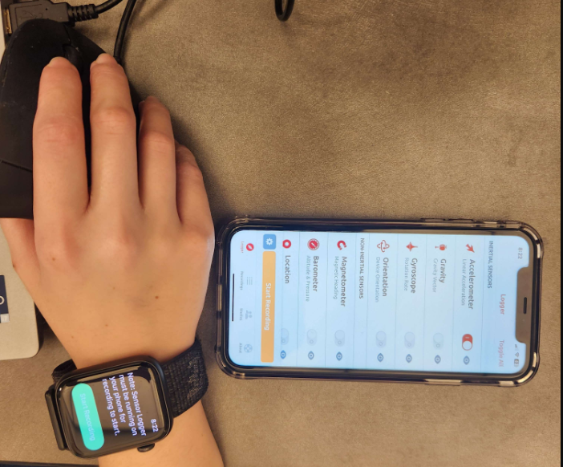
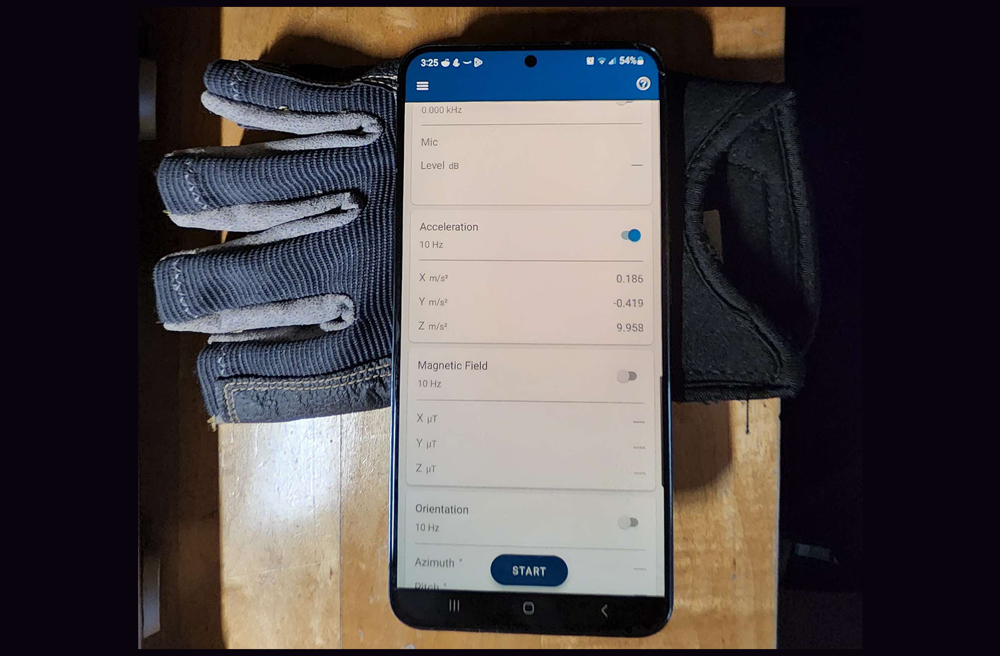
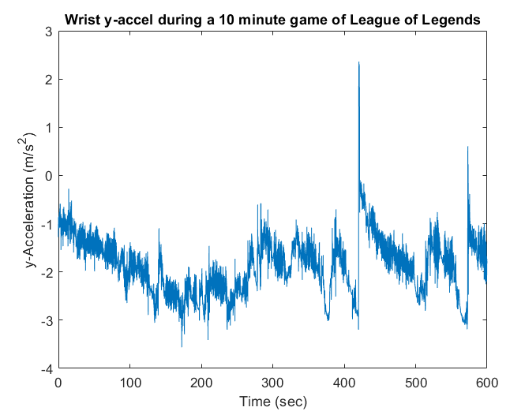
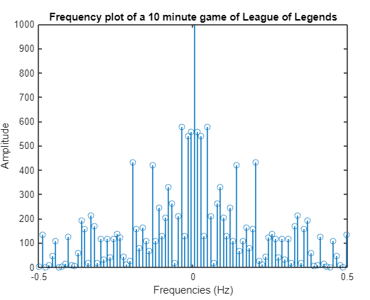

Measuring Wrist Acceleration
In order to analyze the wrist movement for different games, we needed a secure way to attach a sensor to the player's wrist. We first tested with an Apple Watch by using an accelerometer app, but the collected data was very noisy and unreliable.
Data collection setup with Apple Watch
After experimenting with various accelerometers, we discovered that the accelerometer in our phones consistently produced reliable and accurate results. In order to secure the phone onto the player's wrist, we attached the phone onto a glove using velcro and had the player wear it while playing a game.
Data collection setup with phone and glove
We then collected 2 samples per game for the following games,
- League of Legends (MOBA)
- Risk of Rain 2 (TPS)
- Titanfall (FPS)
- Counter Strike (FPS)
giving us a total of 8 datasets.
Data Processing
Once we have data, we can now analyze it using the Fourier transform. For the purpose of this section, we will be using data from a game of League of Legends.
Shown above are the phone's cartesian axes. Given the way the phone is attached to the player's wrist, we will be looking at the y-acceleration values from the phone's accelerometer data.
Y-acceleration data from a game of League of Legends
With the acceleration data, we can perform a fast fourier transform to convert the discrete signal in the time domain to the frequency domain.
Signal in the frequency domain; [-0.5 ≤ x ≤ 0.5]